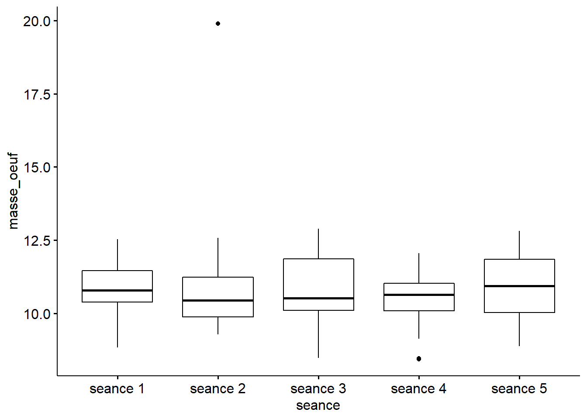
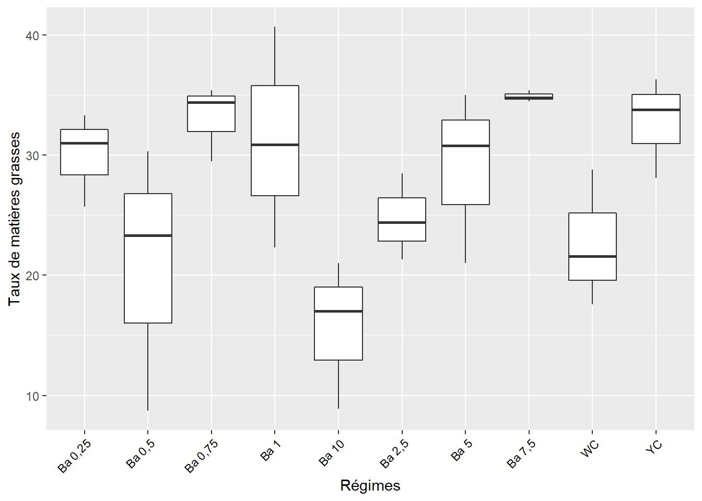
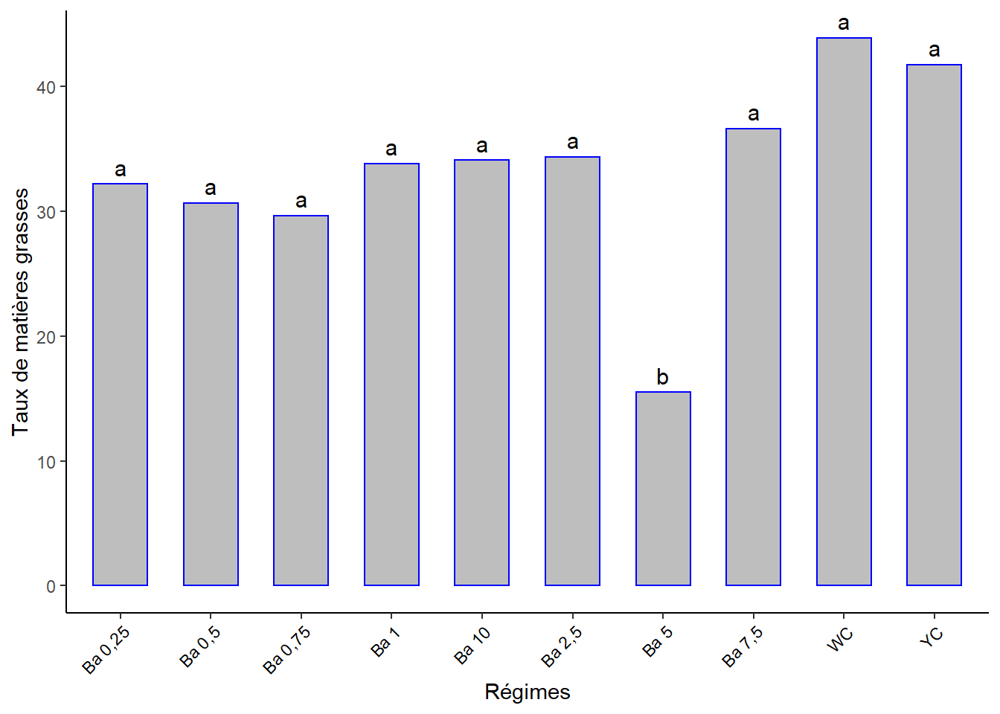
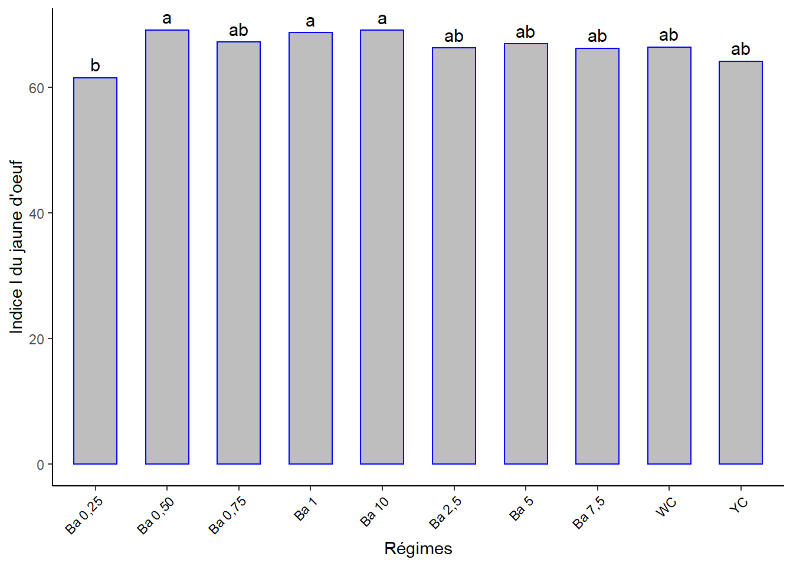
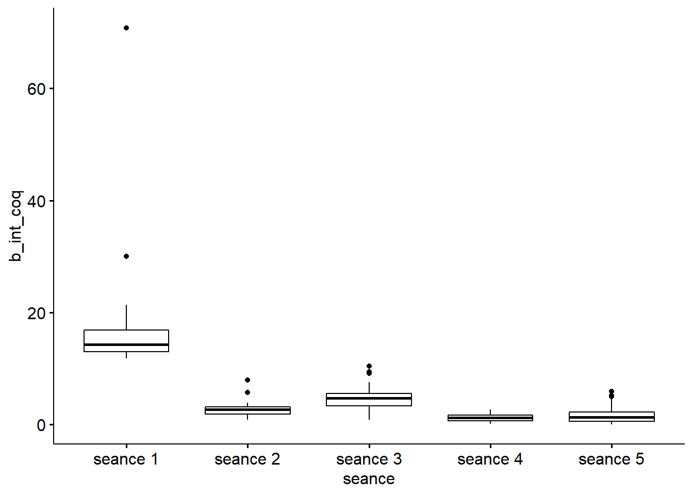
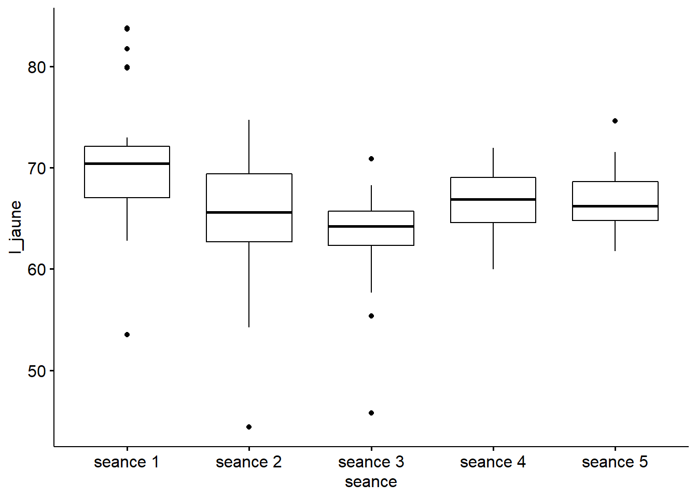
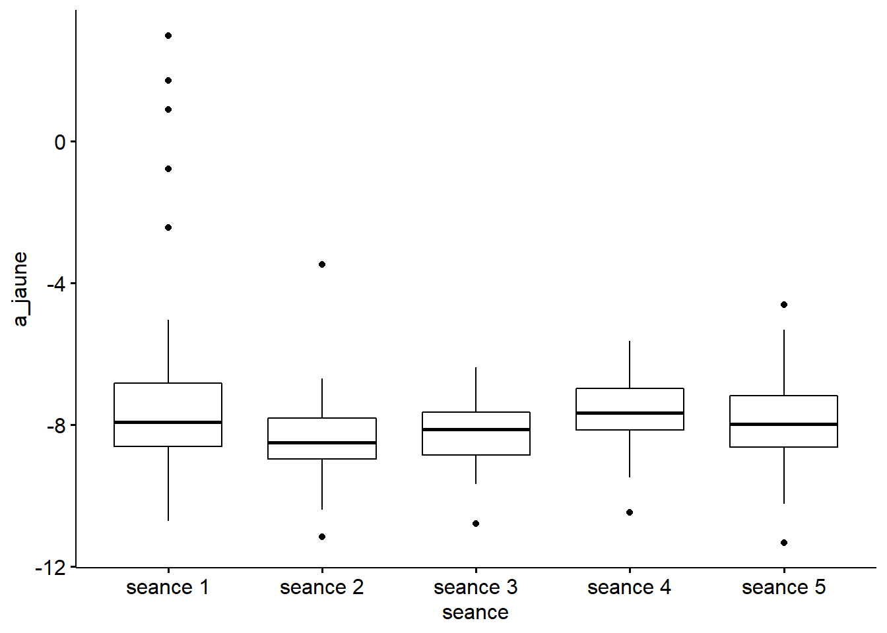
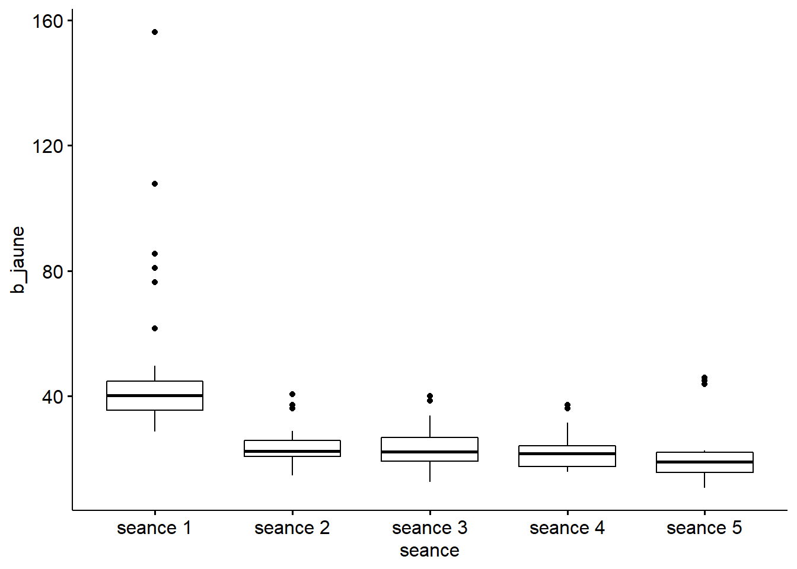
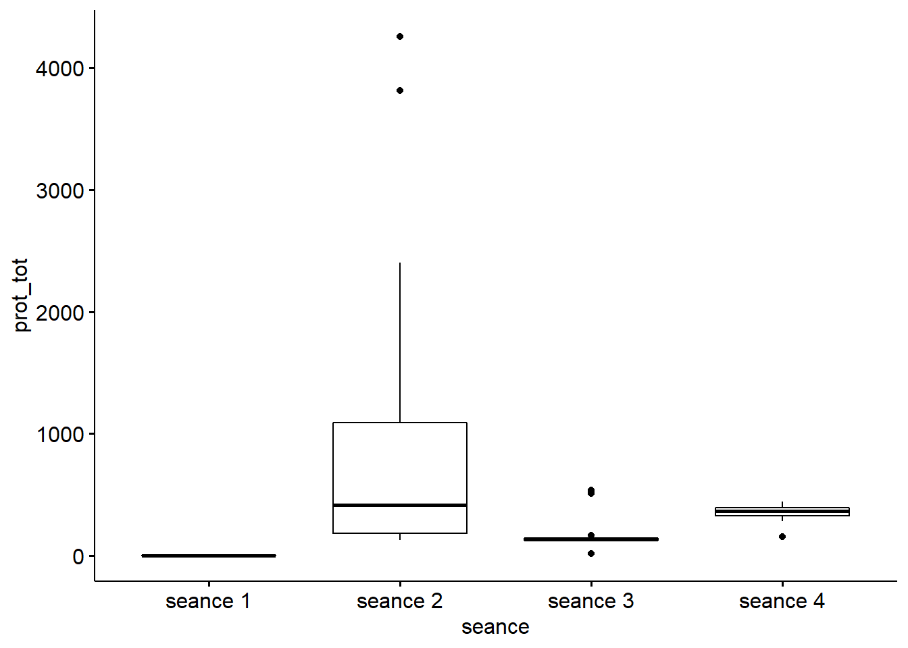
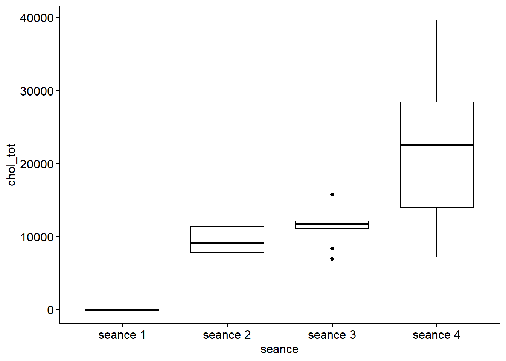

Chapitre 9 Les séances, en mesures répétées
library("tidyverse") # tidy et ggplot2
library("ggpubr") #
library("agricolae") # SNK.test() Student Newman-Keuls
library("car") # leveneTest()
library("rstatix") # convert_as_factor(), friedman_test()9.1 LES DONNÉES
Ajout d’un identifiant (ID) pour faire correspondre les individus par séance.
##
## -- Column specification --------------------------------------------------------
## cols(
## seance = col_character(),
## regime = col_character(),
## no_oeuf = col_double(),
## masse_oeuf = col_double(),
## masse_coq = col_double(),
## epaisseur_coq = col_double(),
## masse_du_jaune = col_double(),
## masse_du_blanc = col_double(),
## l_int_coq = col_double(),
## a_int_coq = col_double(),
## b_int_coq = col_double(),
## l_jaune = col_double(),
## a_jaune = col_double(),
## b_jaune = col_double(),
## abs_prot = col_double(),
## prot_tot = col_double(),
## chol_tot = col_double(),
## lip_tot = col_double()
## )Les tableaux sont conçus depuis Excel en format long.
9.2 MASSE DES OEUFS
9.2.1 Sommaire par séance, masse des oeufs
df %>%
select(seance, regime, masse_oeuf) %>%
group_by(seance) %>%
get_summary_stats(masse_oeuf, type = "mean_sd")## # A tibble: 5 x 5
## seance variable n mean sd
## <fct> <chr> <dbl> <dbl> <dbl>
## 1 seance 1 masse_oeuf 30 10.9 1
## 2 seance 2 masse_oeuf 30 10.9 1.93
## 3 seance 3 masse_oeuf 30 10.9 1.23
## 4 seance 4 masse_oeuf 30 10.5 0.848
## 5 seance 5 masse_oeuf 30 11.0 1.069.2.2 Visualisation boxplots, masse des oeufs
df %>%
select(seance, regime, masse_oeuf) %>%
group_by(seance) %>%
ggboxplot(x = "seance", y = "masse_oeuf")#, add = "point")
9.2.3 Normalité, masse des oeufs
Si les données sont normalement distribuées, la p-value de Shapiro-Wilk doit être supérieure à 0,05.
## # A tibble: 5 x 4
## seance variable statistic p
## <fct> <chr> <dbl> <dbl>
## 1 seance 1 masse_oeuf 0.945 0.126
## 2 seance 2 masse_oeuf 0.603 0.0000000787
## 3 seance 3 masse_oeuf 0.962 0.342
## 4 seance 4 masse_oeuf 0.948 0.146
## 5 seance 5 masse_oeuf 0.963 0.363Distribution non-normale pour la séance 2 => Alternative : Test de Friedman pour mésures repétées, bien que les variances soient homogènes.
## # A tibble: 1 x 4
## df1 df2 statistic p
## <int> <int> <dbl> <dbl>
## 1 4 145 0.998 0.4119.2.4 Test de Friedman, masse des oeufs
## # A tibble: 1 x 6
## .y. n statistic df p method
## * <chr> <int> <dbl> <dbl> <dbl> <chr>
## 1 masse_oeuf 30 6.83 4 0.145 Friedman testLa masse des oeufs n’est pas statistiquement significativement différente aux différents temps (différentes séances) durant cette étude.
9.3 MASSE DE LA COQUILLE
9.3.1 Sommaire par séance, masse de la coquille
df %>%
select(seance, regime, masse_coq) %>%
group_by(seance) %>%
get_summary_stats(masse_coq, type = "mean_sd")## # A tibble: 5 x 5
## seance variable n mean sd
## <fct> <chr> <dbl> <dbl> <dbl>
## 1 seance 1 masse_coq 30 1.28 0.153
## 2 seance 2 masse_coq 30 1.35 0.15
## 3 seance 3 masse_coq 30 1.33 0.145
## 4 seance 4 masse_coq 30 1.19 0.173
## 5 seance 5 masse_coq 30 1.38 0.129.3.2 Visualisation boxplots, masse de la coquille
df %>%
select(seance, regime, masse_coq) %>%
group_by(seance) %>%
ggboxplot(x = "seance", y = "masse_coq")#, add = "point")
9.3.3 Normalité, masse de la coquille
Si les données sont normalement distribuées, la p-value de Shapiro-Wilk doit être supérieure à 0,05.
## # A tibble: 5 x 4
## seance variable statistic p
## <fct> <chr> <dbl> <dbl>
## 1 seance 1 masse_coq 0.962 0.356
## 2 seance 2 masse_coq 0.964 0.385
## 3 seance 3 masse_coq 0.954 0.214
## 4 seance 4 masse_coq 0.914 0.0193
## 5 seance 5 masse_coq 0.972 0.606Distribution non-normale pour la séance 4 => Alternative : Test de Friedman pour mésures repétées, bien que les variances soient homogènes :
## # A tibble: 1 x 4
## df1 df2 statistic p
## <int> <int> <dbl> <dbl>
## 1 4 145 1.05 0.3859.3.4 Test de Friedman, masse de la coquille
## # A tibble: 1 x 6
## .y. n statistic df p method
## * <chr> <int> <dbl> <dbl> <dbl> <chr>
## 1 masse_coq 30 28.1 4 0.0000117 Friedman testLa masse de la coquille est statistiquement très significativement différente entre certains temps (séances) durant cette étude.
9.3.5 Comparaisons par paires à l’aide du test apparié des rangs signés de Wilcoxon.
Les p-values sont ajustées à l’aide de la méthode de correction des tests multiples de Bonferroni.
pwc_mc <- df %>%
select(ID, seance, masse_coq) %>%
wilcox_test(masse_coq ~ seance, paired = TRUE, p.adjust.method = "bonferroni")
pwc_mc## # A tibble: 10 x 9
## .y. group1 group2 n1 n2 statistic p p.adj p.adj.signif
## * <chr> <chr> <chr> <int> <int> <dbl> <dbl> <dbl> <chr>
## 1 masse_coq seance 1 seance 2 30 30 139 0.055 0.549 ns
## 2 masse_coq seance 1 seance 3 30 30 164 0.162 1 ns
## 3 masse_coq seance 1 seance 4 30 30 344 0.021 0.208 ns
## 4 masse_coq seance 1 seance 5 30 30 87 0.003 0.029 *
## 5 masse_coq seance 2 seance 3 30 30 257 0.626 1 ns
## 6 masse_coq seance 2 seance 4 30 30 406 0.000373 0.004 **
## 7 masse_coq seance 2 seance 5 30 30 194. 0.441 1 ns
## 8 masse_coq seance 3 seance 4 30 30 396 0.000418 0.004 **
## 9 masse_coq seance 3 seance 5 30 30 152. 0.102 1 ns
## 10 masse_coq seance 4 seance 5 30 30 67 0.000345 0.003 **séance 1 et séance 5 séance 2 et séance 4 séance 3 et séance 4 séance 4 et séance 5 sont significativement différentes.

9.4 ÉPAISSEUR DE LA COQUILLE
9.4.1 Sommaire par séance, épaisseur de la coquille
df %>%
select(seance, regime, epaisseur_coq) %>%
group_by(seance) %>%
get_summary_stats(epaisseur_coq, type = "mean_sd")## # A tibble: 5 x 5
## seance variable n mean sd
## <fct> <chr> <dbl> <dbl> <dbl>
## 1 seance 1 epaisseur_coq 30 0.294 0.125
## 2 seance 2 epaisseur_coq 30 0.31 0.063
## 3 seance 3 epaisseur_coq 30 0.268 0.057
## 4 seance 4 epaisseur_coq 30 0.267 0.057
## 5 seance 5 epaisseur_coq 30 0.23 0.0549.4.2 Visualisation boxplots, épaisseur de la coquille
df %>%
select(seance, regime, epaisseur_coq) %>%
group_by(seance) %>%
ggboxplot(x = "seance", y = "epaisseur_coq")#, add = "point")
9.4.3 Normalité, épaisseur de la coquille
Si les données sont normalement distribuées, la p-value de Shapiro-Wilk doit être supérieure à 0,05.
## # A tibble: 5 x 4
## seance variable statistic p
## <fct> <chr> <dbl> <dbl>
## 1 seance 1 epaisseur_coq 0.728 0.00000413
## 2 seance 2 epaisseur_coq 0.972 0.605
## 3 seance 3 epaisseur_coq 0.949 0.159
## 4 seance 4 epaisseur_coq 0.907 0.0124
## 5 seance 5 epaisseur_coq 0.947 0.143Distribution non-normale pour les séances 1 et 4 => Alternative : Test de Friedman pour mésures repétées, bien que les variances soient homogènes :
## # A tibble: 1 x 4
## df1 df2 statistic p
## <int> <int> <dbl> <dbl>
## 1 4 145 1.65 0.1649.4.4 Test de Friedman, épaisseur de la coquille
tf_ec <- df %>%
select(ID, seance, epaisseur_coq) %>%
friedman_test(epaisseur_coq ~ seance |ID)
tf_ec## # A tibble: 1 x 6
## .y. n statistic df p method
## * <chr> <int> <dbl> <dbl> <dbl> <chr>
## 1 epaisseur_coq 30 20.5 4 0.000397 Friedman testLa masse de la coquille est statistiquement très significativement différente entre certains temps (séances) durant cette étude.
9.4.5 Comparaisons par paires à l’aide du test apparié des rangs signés de Wilcoxon.
Les p-values sont ajustées à l’aide de la méthode de correction des tests multiples de Bonferroni.
pwc_ec <- df %>%
select(ID, seance, masse_coq) %>%
wilcox_test(masse_coq ~ seance, paired = TRUE, p.adjust.method = "bonferroni")
pwc_ec## # A tibble: 10 x 9
## .y. group1 group2 n1 n2 statistic p p.adj p.adj.signif
## * <chr> <chr> <chr> <int> <int> <dbl> <dbl> <dbl> <chr>
## 1 masse_coq seance 1 seance 2 30 30 139 0.055 0.549 ns
## 2 masse_coq seance 1 seance 3 30 30 164 0.162 1 ns
## 3 masse_coq seance 1 seance 4 30 30 344 0.021 0.208 ns
## 4 masse_coq seance 1 seance 5 30 30 87 0.003 0.029 *
## 5 masse_coq seance 2 seance 3 30 30 257 0.626 1 ns
## 6 masse_coq seance 2 seance 4 30 30 406 0.000373 0.004 **
## 7 masse_coq seance 2 seance 5 30 30 194. 0.441 1 ns
## 8 masse_coq seance 3 seance 4 30 30 396 0.000418 0.004 **
## 9 masse_coq seance 3 seance 5 30 30 152. 0.102 1 ns
## 10 masse_coq seance 4 seance 5 30 30 67 0.000345 0.003 **séance 1 et séance 5 séance 2 et séance 4 séance 3 et séance 4 séance 4 et séance 5 sont significativement différentes.
9.5 MASSE DU JAUNE
9.5.1 Sommaire par séance, masse du jaune
df %>%
select(seance, regime, masse_du_jaune) %>%
group_by(seance) %>%
get_summary_stats(masse_du_jaune, type = "mean_sd")## # A tibble: 5 x 5
## seance variable n mean sd
## <fct> <chr> <dbl> <dbl> <dbl>
## 1 seance 1 masse_du_jaune 30 3.57 0.393
## 2 seance 2 masse_du_jaune 30 3.45 0.388
## 3 seance 3 masse_du_jaune 30 3.58 0.469
## 4 seance 4 masse_du_jaune 30 3.47 0.353
## 5 seance 5 masse_du_jaune 30 4.50 4.629.5.2 Visualisation boxplots, masse du jaune
df %>%
select(seance, regime, masse_du_jaune) %>%
group_by(seance) %>%
ggboxplot(x = "seance", y = "masse_du_jaune")#, add = "point")
9.5.3 Normalité, masse du jaune
Si les données sont normalement distribuées, la p-value de Shapiro-Wilk doit être supérieure à 0,05.
## # A tibble: 5 x 4
## seance variable statistic p
## <fct> <chr> <dbl> <dbl>
## 1 seance 1 masse_du_jaune 0.938 8.06e- 2
## 2 seance 2 masse_du_jaune 0.985 9.44e- 1
## 3 seance 3 masse_du_jaune 0.933 5.79e- 2
## 4 seance 4 masse_du_jaune 0.963 3.77e- 1
## 5 seance 5 masse_du_jaune 0.250 2.72e-11Distribution non-normale pour les séances 1 et 5 => Alternative : Test de Friedman pour mésures repétées, bien que les variances soient homogènes :
## # A tibble: 1 x 4
## df1 df2 statistic p
## <int> <int> <dbl> <dbl>
## 1 4 145 0.999 0.4109.5.4 Test de Friedman, masse du jaune
tf_mj <- df %>%
select(ID, seance, masse_du_jaune) %>%
friedman_test(masse_du_jaune ~ seance |ID)
tf_mj## # A tibble: 1 x 6
## .y. n statistic df p method
## * <chr> <int> <dbl> <dbl> <dbl> <chr>
## 1 masse_du_jaune 30 5.52 4 0.238 Friedman testLa masse du jaune d’oeuf n’est pas statistiquement différente entre les différentes séances de mesure.
9.6 MASSE DU BLANC
9.6.1 Sommaire par séance, masse du blanc
df %>%
select(seance, regime, masse_du_blanc) %>%
group_by(seance) %>%
get_summary_stats(masse_du_blanc, type = "mean_sd")## # A tibble: 5 x 5
## seance variable n mean sd
## <fct> <chr> <dbl> <dbl> <dbl>
## 1 seance 1 masse_du_blanc 30 6.01 0.686
## 2 seance 2 masse_du_blanc 30 6.08 1.95
## 3 seance 3 masse_du_blanc 30 5.94 0.853
## 4 seance 4 masse_du_blanc 30 5.84 0.576
## 5 seance 5 masse_du_blanc 30 5.07 4.929.6.2 Visualisation boxplots, masse du blanc
df %>%
select(seance, regime, masse_du_blanc) %>%
group_by(seance) %>%
ggboxplot(x = "seance", y = "masse_du_blanc")#, add = "point")
9.6.3 Normalité, masse du blanc
Si les données sont normalement distribuées, la p-value de Shapiro-Wilk doit être supérieure à 0,05.
## # A tibble: 5 x 4
## seance variable statistic p
## <fct> <chr> <dbl> <dbl>
## 1 seance 1 masse_du_blanc 0.932 5.44e- 2
## 2 seance 2 masse_du_blanc 0.510 6.90e- 9
## 3 seance 3 masse_du_blanc 0.955 2.33e- 1
## 4 seance 4 masse_du_blanc 0.951 1.84e- 1
## 5 seance 5 masse_du_blanc 0.312 8.96e-11Distribution non-normale pour les séances 2 et 5 => Alternative : Test de Friedman pour mésures repétées, bien que les variances soient homogènes :
## # A tibble: 1 x 4
## df1 df2 statistic p
## <int> <int> <dbl> <dbl>
## 1 4 145 1.20 0.3149.6.4 Test de Friedman, masse du blanc
tf_mb <- df %>%
select(ID, seance, masse_du_blanc) %>%
friedman_test(masse_du_blanc ~ seance |ID)
tf_mb## # A tibble: 1 x 6
## .y. n statistic df p method
## * <chr> <int> <dbl> <dbl> <dbl> <chr>
## 1 masse_du_blanc 30 3.40 4 0.493 Friedman testLa masse du blanc d’oeuf n’est pas statistiquement différente entre les différentes séances de mesure.
9.7 INDICE ‘l’ INTÉRIEUR DE LA COQUILLE
9.7.1 Sommaire par séance, indice ‘l’ intérieur coquille
df %>%
select(seance, regime, l_int_coq) %>%
group_by(seance) %>%
get_summary_stats(l_int_coq, type = "mean_sd")## # A tibble: 5 x 5
## seance variable n mean sd
## <fct> <chr> <dbl> <dbl> <dbl>
## 1 seance 1 l_int_coq 30 80.6 14.6
## 2 seance 2 l_int_coq 30 72.6 18.0
## 3 seance 3 l_int_coq 30 53.3 16.8
## 4 seance 4 l_int_coq 30 83.5 2.40
## 5 seance 5 l_int_coq 30 84.6 4.429.7.2 Visualisation boxplots, indice ‘l’ intérieur coquille
df %>%
select(seance, regime, l_int_coq) %>%
group_by(seance) %>%
ggboxplot(x = "seance", y = "l_int_coq")#, add = "point")
9.7.3 Normalité, indice ‘l’ intérieur coquille
Si les données sont normalement distribuées, la p-value de Shapiro-Wilk doit être supérieure à 0,05.
## # A tibble: 5 x 4
## seance variable statistic p
## <fct> <chr> <dbl> <dbl>
## 1 seance 1 l_int_coq 0.415 7.46e-10
## 2 seance 2 l_int_coq 0.809 9.78e- 5
## 3 seance 3 l_int_coq 0.792 4.66e- 5
## 4 seance 4 l_int_coq 0.971 5.75e- 1
## 5 seance 5 l_int_coq 0.689 1.09e- 6Distribution non-normale pour toutes les séances sauf la 4 => Alternative : Test de Friedman pour mésures repétées,variances non-homogènes également :
## # A tibble: 1 x 4
## df1 df2 statistic p
## <int> <int> <dbl> <dbl>
## 1 4 145 7.83 0.000009669.7.4 Test de Friedman, indice ‘l’ intérieur coquille
## # A tibble: 1 x 6
## .y. n statistic df p method
## * <chr> <int> <dbl> <dbl> <dbl> <chr>
## 1 l_int_coq 30 43.0 4 0.0000000105 Friedman testCet indice est statistiquement très significativement différente entre certains temps (séances) durant cette étude.
9.7.5 Comparaisons par paires à l’aide du test apparié des rangs signés de Wilcoxon.
Les p-values sont ajustées à l’aide de la méthode de correction des tests multiples de Bonferroni.
pwc_lic <- df %>%
select(ID, seance, l_int_coq) %>%
wilcox_test(l_int_coq ~ seance, paired = TRUE, p.adjust.method = "bonferroni")
pwc_lic## # A tibble: 10 x 9
## .y. group1 group2 n1 n2 statistic p p.adj p.adj.signif
## * <chr> <chr> <chr> <int> <int> <dbl> <dbl> <dbl> <chr>
## 1 l_int_~ seance~ seance~ 30 30 322 6.7 e-2 6.72e-1 ns
## 2 l_int_~ seance~ seance~ 30 30 429 5.53e-5 5.53e-4 ***
## 3 l_int_~ seance~ seance~ 30 30 221 8.24e-1 1 e+0 ns
## 4 l_int_~ seance~ seance~ 30 30 162. 1.47e-1 1 e+0 ns
## 5 l_int_~ seance~ seance~ 30 30 406 1.53e-4 2 e-3 **
## 6 l_int_~ seance~ seance~ 30 30 128 5.4 e-2 5.43e-1 ns
## 7 l_int_~ seance~ seance~ 30 30 97.5 6 e-3 5.7 e-2 ns
## 8 l_int_~ seance~ seance~ 30 30 14 2.05e-7 2.05e-6 ****
## 9 l_int_~ seance~ seance~ 30 30 2 2.23e-6 2.23e-5 ****
## 10 l_int_~ seance~ seance~ 30 30 114 1.4 e-2 1.37e-1 nsséance 1 et séance 3 séance 2 et séance 3 séance 3 et séance 4 séance 3 et séance 5 sont significativement différentes.
9.8 INDICE ‘a’ INTÉRIEUR DE LA COQUILLE
9.8.1 Sommaire par séance, indice ‘a’ intérieur coquille
df %>%
select(seance, regime, a_int_coq) %>%
group_by(seance) %>%
get_summary_stats(a_int_coq, type = "mean_sd")## # A tibble: 5 x 5
## seance variable n mean sd
## <fct> <chr> <dbl> <dbl> <dbl>
## 1 seance 1 a_int_coq 30 -4.32 2.90
## 2 seance 2 a_int_coq 30 -4.11 2.71
## 3 seance 3 a_int_coq 30 -4.88 1.84
## 4 seance 4 a_int_coq 30 -2.94 1.10
## 5 seance 5 a_int_coq 30 -2.77 1.439.8.2 Visualisation boxplots, indice ‘a’ intérieur coquille
df %>%
select(seance, regime, a_int_coq) %>%
group_by(seance) %>%
ggboxplot(x = "seance", y = "a_int_coq")#, add = "point")
9.8.3 Normalité, indice ‘a’ intérieur coquille
Si les données sont normalement distribuées, la p-value de Shapiro-Wilk doit être supérieure à 0,05.
## # A tibble: 5 x 4
## seance variable statistic p
## <fct> <chr> <dbl> <dbl>
## 1 seance 1 a_int_coq 0.868 0.00151
## 2 seance 2 a_int_coq 0.915 0.0196
## 3 seance 3 a_int_coq 0.800 0.0000646
## 4 seance 4 a_int_coq 0.984 0.922
## 5 seance 5 a_int_coq 0.959 0.288Distribution non-normale pour les séances 1, 3 et 5 => Alternative : Test de Friedman pour mésures repétées,variances non-homogènes également :
## # A tibble: 1 x 4
## df1 df2 statistic p
## <int> <int> <dbl> <dbl>
## 1 4 145 5.28 0.0005359.8.4 Test de Friedman, indice ‘a’ intérieur coquille
## # A tibble: 1 x 6
## .y. n statistic df p method
## * <chr> <int> <dbl> <dbl> <dbl> <chr>
## 1 a_int_coq 30 22.7 4 0.000145 Friedman testCet indice est statistiquement très significativement différent entre certains temps (séances) durant cette étude.
9.8.5 Comparaisons par paires à l’aide du test apparié des rangs signés de Wilcoxon.
Les p-values sont ajustées à l’aide de la méthode de correction des tests multiples de Bonferroni.
pwc_aic <- df %>%
select(ID, seance, a_int_coq) %>%
wilcox_test(a_int_coq ~ seance, paired = TRUE, p.adjust.method = "bonferroni")
pwc_aic## # A tibble: 10 x 9
## .y. group1 group2 n1 n2 statistic p p.adj p.adj.signif
## * <chr> <chr> <chr> <int> <int> <dbl> <dbl> <dbl> <chr>
## 1 a_int_c~ seance 1 seance~ 30 30 222 8.39e-1 1 e+0 ns
## 2 a_int_c~ seance 1 seance~ 30 30 295 2.02e-1 1 e+0 ns
## 3 a_int_c~ seance 1 seance~ 30 30 125 2.8 e-2 2.77e-1 ns
## 4 a_int_c~ seance 1 seance~ 30 30 114 1.5 e-2 1.52e-1 ns
## 5 a_int_c~ seance 2 seance~ 30 30 292 2.29e-1 1 e+0 ns
## 6 a_int_c~ seance 2 seance~ 30 30 142 6.4 e-2 6.36e-1 ns
## 7 a_int_c~ seance 2 seance~ 30 30 129 3.3 e-2 3.27e-1 ns
## 8 a_int_c~ seance 3 seance~ 30 30 40 1.3 e-4 1 e-3 **
## 9 a_int_c~ seance 3 seance~ 30 30 25 2.06e-5 2.06e-4 ***
## 10 a_int_c~ seance 4 seance~ 30 30 171 3.2 e-1 1 e+0 nsséance 3 et séance 4 séance 3 et séance 5 sont significativement différentes.
9.9 INDICE ‘b’ INTÉRIEUR DE LA COQUILLE
9.9.1 Sommaire par séance, indice ‘b’ intérieur coquille
df %>%
select(seance, regime, b_int_coq) %>%
group_by(seance) %>%
get_summary_stats(b_int_coq, type = "mean_sd")## # A tibble: 5 x 5
## seance variable n mean sd
## <fct> <chr> <dbl> <dbl> <dbl>
## 1 seance 1 b_int_coq 30 17.2 10.8
## 2 seance 2 b_int_coq 30 2.77 1.38
## 3 seance 3 b_int_coq 30 4.69 2.45
## 4 seance 4 b_int_coq 30 1.26 0.691
## 5 seance 5 b_int_coq 30 1.82 1.649.9.2 Visualisation boxplots, indice ‘b’ intérieur coquille
df %>%
select(seance, regime, b_int_coq) %>%
group_by(seance) %>%
ggboxplot(x = "seance", y = "b_int_coq")#, add = "point")
9.9.3 Normalité, indice ‘b’ intérieur coquille
Si les données sont normalement distribuées, la p-value de Shapiro-Wilk doit être supérieure à 0,05.
## # A tibble: 5 x 4
## seance variable statistic p
## <fct> <chr> <dbl> <dbl>
## 1 seance 1 b_int_coq 0.436 0.00000000121
## 2 seance 2 b_int_coq 0.828 0.000221
## 3 seance 3 b_int_coq 0.954 0.214
## 4 seance 4 b_int_coq 0.961 0.320
## 5 seance 5 b_int_coq 0.842 0.000418Distribution non-normale pour toutes les séances => Alternative : Test de Friedman pour mésures repétées,variances non-homogènes également :
## # A tibble: 1 x 4
## df1 df2 statistic p
## <int> <int> <dbl> <dbl>
## 1 4 145 2.99 0.02089.9.4 Test de Friedman, indice ‘b’ intérieur coquille
## # A tibble: 1 x 6
## .y. n statistic df p method
## * <chr> <int> <dbl> <dbl> <dbl> <chr>
## 1 b_int_coq 30 90.4 4 1.07e-18 Friedman testCet indice est statistiquement très significativement différent entre certains temps (séances) durant cette étude.
9.9.5 Comparaisons par paires à l’aide du test apparié des rangs signés de Wilcoxon.
Les p-values sont ajustées à l’aide de la méthode de correction des tests multiples de Bonferroni.
pwc_bic <- df %>%
select(ID, seance, b_int_coq) %>%
wilcox_test(b_int_coq ~ seance, paired = TRUE, p.adjust.method = "bonferroni")
pwc_bic## # A tibble: 10 x 9
## .y. group1 group2 n1 n2 statistic p p.adj p.adj.signif
## * <chr> <chr> <chr> <int> <int> <dbl> <dbl> <dbl> <chr>
## 1 b_int_~ seance~ seance~ 30 30 465 1.86e-9 1.86e-8 ****
## 2 b_int_~ seance~ seance~ 30 30 465 1.82e-6 1.82e-5 ****
## 3 b_int_~ seance~ seance~ 30 30 465 1.86e-9 1.86e-8 ****
## 4 b_int_~ seance~ seance~ 30 30 465 1.82e-6 1.82e-5 ****
## 5 b_int_~ seance~ seance~ 30 30 69 4.18e-4 4 e-3 **
## 6 b_int_~ seance~ seance~ 30 30 443 9.98e-7 9.98e-6 ****
## 7 b_int_~ seance~ seance~ 30 30 374 3 e-3 2.8 e-2 *
## 8 b_int_~ seance~ seance~ 30 30 455 8.01e-8 8.01e-7 ****
## 9 b_int_~ seance~ seance~ 30 30 454 5.46e-6 5.46e-5 ****
## 10 b_int_~ seance~ seance~ 30 30 178. 2.71e-1 1 e+0 nsSéances toutes significativement différentes sauf la 4 et la 5 .
9.10 INDICE ‘l’ DU JAUNE D’OEUF
9.10.1 Sommaire par séance, indice ‘l’ du jaune d’oeuf
df %>%
select(seance, regime, l_jaune) %>%
group_by(seance) %>%
get_summary_stats(l_jaune, type = "mean_sd")## # A tibble: 5 x 5
## seance variable n mean sd
## <fct> <chr> <dbl> <dbl> <dbl>
## 1 seance 1 l_jaune 30 70.5 6.43
## 2 seance 2 l_jaune 30 64.9 6.21
## 3 seance 3 l_jaune 30 63.5 4.93
## 4 seance 4 l_jaune 30 66.6 3.08
## 5 seance 5 l_jaune 30 66.6 2.929.10.2 Visualisation boxplots, indice ‘l’ du jaune d’oeuf
df %>%
select(seance, regime, l_jaune) %>%
group_by(seance) %>%
ggboxplot(x = "seance", y = "l_jaune")#, add = "point")
9.10.3 Normalité, indice ‘l’ du jaune d’oeuf
Si les données sont normalement distribuées, la p-value de Shapiro-Wilk doit être supérieure à 0,05.
## # A tibble: 5 x 4
## seance variable statistic p
## <fct> <chr> <dbl> <dbl>
## 1 seance 1 l_jaune 0.919 0.0259
## 2 seance 2 l_jaune 0.902 0.00930
## 3 seance 3 l_jaune 0.870 0.00168
## 4 seance 4 l_jaune 0.965 0.411
## 5 seance 5 l_jaune 0.963 0.371Distribution non-normale pour les séances 1, 2 et 3 => Alternative : Test de Friedman pour mésures repétées,variances non-homogènes également :
## # A tibble: 1 x 4
## df1 df2 statistic p
## <int> <int> <dbl> <dbl>
## 1 4 145 2.67 0.03449.10.4 Test de Friedman, indice ‘l’ du jaune d’oeuf
## # A tibble: 1 x 6
## .y. n statistic df p method
## * <chr> <int> <dbl> <dbl> <dbl> <chr>
## 1 l_jaune 30 32.4 4 0.00000156 Friedman testCet indice est statistiquement très significativement différente entre certains temps (séances) durant cette étude.
9.10.5 Comparaisons par paires à l’aide du test apparié des rangs signés de Wilcoxon.
Les p-values sont ajustées à l’aide de la méthode de correction des tests multiples de Bonferroni.
pwc_lj <- df %>%
select(ID, seance, l_jaune) %>%
wilcox_test(l_jaune ~ seance, paired = TRUE, p.adjust.method = "bonferroni")
pwc_lj## # A tibble: 10 x 9
## .y. group1 group2 n1 n2 statistic p p.adj p.adj.signif
## * <chr> <chr> <chr> <int> <int> <dbl> <dbl> <dbl> <chr>
## 1 l_jaune seance 1 seance 2 30 30 380 2 e-3 1.7 e-2 *
## 2 l_jaune seance 1 seance 3 30 30 444 1.42e-5 1.42e-4 ***
## 3 l_jaune seance 1 seance 4 30 30 380. 2 e-3 2.4 e-2 *
## 4 l_jaune seance 1 seance 5 30 30 365 7 e-3 6.6 e-2 ns
## 5 l_jaune seance 2 seance 3 30 30 283 3.09e-1 1 e+0 ns
## 6 l_jaune seance 2 seance 4 30 30 180 2.89e-1 1 e+0 ns
## 7 l_jaune seance 2 seance 5 30 30 193 4.28e-1 1 e+0 ns
## 8 l_jaune seance 3 seance 4 30 30 101 6 e-3 5.8 e-2 ns
## 9 l_jaune seance 3 seance 5 30 30 72 9.97e-4 1 e-2 **
## 10 l_jaune seance 4 seance 5 30 30 238 9.19e-1 1 e+0 nsdf %>%
select(seance, regime, l_jaune) %>%
group_by(seance) %>%
get_summary_stats(l_jaune, type = "mean")## # A tibble: 5 x 4
## seance variable n mean
## <fct> <chr> <dbl> <dbl>
## 1 seance 1 l_jaune 30 70.5
## 2 seance 2 l_jaune 30 64.9
## 3 seance 3 l_jaune 30 63.5
## 4 seance 4 l_jaune 30 66.6
## 5 seance 5 l_jaune 30 66.6séance 1 et séance 2 séance 1 et séance 3 séance 1 et séance 4 séance 3 et séance 5 sont significativement différentes.
9.11 INDICE ‘a’ DU JAUNE D’OEUF
9.11.1 Sommaire par séance, indice ‘a’ du jaune d’oeuf
df %>%
select(seance, regime, a_jaune) %>%
group_by(seance) %>%
get_summary_stats(a_jaune, type = "mean_sd")## # A tibble: 5 x 5
## seance variable n mean sd
## <fct> <chr> <dbl> <dbl> <dbl>
## 1 seance 1 a_jaune 30 -6.66 3.53
## 2 seance 2 a_jaune 30 -8.37 1.40
## 3 seance 3 a_jaune 30 -8.23 0.976
## 4 seance 4 a_jaune 30 -7.63 1.03
## 5 seance 5 a_jaune 30 -8.07 1.629.11.2 Visualisation boxplots, indice ‘a’ du jaune d’oeuf
df %>%
select(seance, regime, a_jaune) %>%
group_by(seance) %>%
ggboxplot(x = "seance", y = "a_jaune")#, add = "point")
9.11.3 Normalité, indice ‘a’ du jaune d’oeuf
Si les données sont normalement distribuées, la p-value de Shapiro-Wilk doit être supérieure à 0,05.
## # A tibble: 5 x 4
## seance variable statistic p
## <fct> <chr> <dbl> <dbl>
## 1 seance 1 a_jaune 0.776 0.0000242
## 2 seance 2 a_jaune 0.912 0.0170
## 3 seance 3 a_jaune 0.975 0.686
## 4 seance 4 a_jaune 0.973 0.623
## 5 seance 5 a_jaune 0.956 0.249Distribution non-normale pour les séances 1 et 2 => Alternative : Test de Friedman pour mésures repétées,variances non-homogènes également :
## # A tibble: 1 x 4
## df1 df2 statistic p
## <int> <int> <dbl> <dbl>
## 1 4 145 4.67 0.001429.11.4 Test de Friedman, indice ‘a’ du jaune d’oeuf
## # A tibble: 1 x 6
## .y. n statistic df p method
## * <chr> <int> <dbl> <dbl> <dbl> <chr>
## 1 a_jaune 30 9.47 4 0.0504 Friedman testLes comparaisons par paires aideront à conclure. Probablement pas de diiférences significatives …
9.11.5 Comparaisons par paires à l’aide du test apparié des rangs signés de Wilcoxon.
Les p-values sont ajustées à l’aide de la méthode de correction des tests multiples de Bonferroni.
pwc_aj <- df %>%
select(ID, seance, a_jaune) %>%
wilcox_test(a_jaune ~ seance, paired = TRUE, p.adjust.method = "bonferroni")
pwc_aj## # A tibble: 10 x 9
## .y. group1 group2 n1 n2 statistic p p.adj p.adj.signif
## * <chr> <chr> <chr> <int> <int> <dbl> <dbl> <dbl> <chr>
## 1 a_jaune seance 1 seance 2 30 30 314 0.096 0.957 ns
## 2 a_jaune seance 1 seance 3 30 30 324. 0.063 0.626 ns
## 3 a_jaune seance 1 seance 4 30 30 234 0.984 1 ns
## 4 a_jaune seance 1 seance 5 30 30 300 0.168 1 ns
## 5 a_jaune seance 2 seance 3 30 30 192. 0.405 1 ns
## 6 a_jaune seance 2 seance 4 30 30 118 0.018 0.175 ns
## 7 a_jaune seance 2 seance 5 30 30 183 0.318 1 ns
## 8 a_jaune seance 3 seance 4 30 30 110 0.012 0.121 ns
## 9 a_jaune seance 3 seance 5 30 30 197 0.472 1 ns
## 10 a_jaune seance 4 seance 5 30 30 295 0.205 1 nsPas de différences significatives entre les séances.
9.12 INDICE ‘b’ DU JAUNE D’OEUF
9.12.1 Sommaire par séance, indice ‘b’ du jaune d’oeuf
df %>%
select(seance, regime, b_jaune) %>%
group_by(seance) %>%
get_summary_stats(b_jaune, type = "mean_sd")## # A tibble: 5 x 5
## seance variable n mean sd
## <fct> <chr> <dbl> <dbl> <dbl>
## 1 seance 1 b_jaune 30 49.7 27.2
## 2 seance 2 b_jaune 30 23.8 6.00
## 3 seance 3 b_jaune 30 23.2 6.27
## 4 seance 4 b_jaune 30 22.4 5.65
## 5 seance 5 b_jaune 30 20.6 8.979.12.2 Visualisation boxplots, indice ‘b’ du jaune d’oeuf
df %>%
select(seance, regime, b_jaune) %>%
group_by(seance) %>%
ggboxplot(x = "seance", y = "b_jaune")#, add = "point")
9.12.3 Normalité, indice ‘b’ du jaune d’oeuf
Si les données sont normalement distribuées, la p-value de Shapiro-Wilk doit être supérieure à 0,05.
## # A tibble: 5 x 4
## seance variable statistic p
## <fct> <chr> <dbl> <dbl>
## 1 seance 1 b_jaune 0.644 0.000000264
## 2 seance 2 b_jaune 0.900 0.00826
## 3 seance 3 b_jaune 0.918 0.0232
## 4 seance 4 b_jaune 0.886 0.00390
## 5 seance 5 b_jaune 0.729 0.00000421Distribution non-normale pour toutes les séances => Alternative : Test de Friedman pour mésures repétées,variances non-homogènes également :
## # A tibble: 1 x 4
## df1 df2 statistic p
## <int> <int> <dbl> <dbl>
## 1 4 145 3.97 0.004339.12.4 Test de Friedman, indice ‘b’ du jaune d’oeuf
## # A tibble: 1 x 6
## .y. n statistic df p method
## * <chr> <int> <dbl> <dbl> <dbl> <chr>
## 1 b_jaune 30 64.8 4 2.80e-13 Friedman testCet indice est statistiquement très significativement différent entre certains temps (séances) durant cette étude.
9.12.5 Comparaisons par paires à l’aide du test apparié des rangs signés de Wilcoxon
Les p-values sont ajustées à l’aide de la méthode de correction des tests multiples de Bonferroni.
pwc_bj <- df %>%
select(ID, seance, b_jaune) %>%
wilcox_test(b_jaune ~ seance, paired = TRUE, p.adjust.method = "bonferroni")
pwc_bj## # A tibble: 10 x 9
## .y. group1 group2 n1 n2 statistic p p.adj p.adj.signif
## * <chr> <chr> <chr> <int> <int> <dbl> <dbl> <dbl> <chr>
## 1 b_jau~ seance~ seance~ 30 30 465 1.86e-9 1.86e-8 ****
## 2 b_jau~ seance~ seance~ 30 30 465 1.82e-6 1.82e-5 ****
## 3 b_jau~ seance~ seance~ 30 30 465 1.86e-9 1.86e-8 ****
## 4 b_jau~ seance~ seance~ 30 30 465 1.82e-6 1.82e-5 ****
## 5 b_jau~ seance~ seance~ 30 30 268. 4.78e-1 1 e+0 ns
## 6 b_jau~ seance~ seance~ 30 30 306 1.35e-1 1 e+0 ns
## 7 b_jau~ seance~ seance~ 30 30 349 1.6 e-2 1.55e-1 ns
## 8 b_jau~ seance~ seance~ 30 30 265 5.16e-1 1 e+0 ns
## 9 b_jau~ seance~ seance~ 30 30 327 5.3 e-2 5.32e-1 ns
## 10 b_jau~ seance~ seance~ 30 30 306 1.35e-1 1 e+0 nsSéance 1 différente des autres qui sont similaires.
9.13 PROTÉINES TOTALES
9.13.1 Sommaire par séance, protéines
df %>%
select(seance, regime, prot_tot) %>%
filter(seance != "seance 5") %>%
group_by(seance) %>%
get_summary_stats(prot_tot, type = "mean_sd")## # A tibble: 4 x 5
## seance variable n mean sd
## <fct> <chr> <dbl> <dbl> <dbl>
## 1 seance 1 prot_tot 30 1.67 0.688
## 2 seance 2 prot_tot 30 969. 1197.
## 3 seance 3 prot_tot 30 169. 123.
## 4 seance 4 prot_tot 30 352. 58.99.13.2 Visualisation boxplots, protéines
df %>%
select(seance, regime, prot_tot) %>%
filter(seance != "seance 5") %>%
group_by(seance) %>%
ggboxplot(x = "seance", y = "prot_tot")#, add = "point")
9.13.3 Normalité, protéines
Si les données sont normalement distribuées, la p-value de Shapiro-Wilk doit être supérieure à 0,05.
df %>%
select(seance, regime, prot_tot) %>%
filter(seance != "seance 5") %>%
group_by(seance) %>%
shapiro_test(prot_tot)## # A tibble: 4 x 4
## seance variable statistic p
## <fct> <chr> <dbl> <dbl>
## 1 seance 1 prot_tot 0.935 0.0679
## 2 seance 2 prot_tot 0.707 0.00000201
## 3 seance 3 prot_tot 0.505 0.00000000600
## 4 seance 4 prot_tot 0.916 0.0217Distribution non-normale pour les séances 2 à 4 => Alternative : Test de Friedman pour mésures repétées,variances non-homogènes également :
df %>%
select(seance, regime, prot_tot) %>%
filter(seance != "seance 5") %>%
levene_test(prot_tot ~ seance)## # A tibble: 1 x 4
## df1 df2 statistic p
## <int> <int> <dbl> <dbl>
## 1 3 116 14.6 0.00000004089.13.4 Test de Friedman, protéines
{r} tf_pt <- df %>% select(ID, seance, prot_tot) %>% filter(seance != "seance 5") %>% friedman_test(prot_tot ~ seance |ID) tf_pt
Cet indice est statistiquement très significativement différent entre certains temps (séances) durant cette étude.
9.13.5 Comparaisons par paires à l’aide du test apparié des rangs signés de Wilcoxon
Les p-values sont ajustées à l’aide de la méthode de correction des tests multiples de Bonferroni.
{r} pwc_pt <- df %>% select(ID, seance, prot_tot) %>% filter(seance != "seance 5") %>% wilcox_test(prot_tot ~ seance, paired = TRUE, p.adjust.method = "bonferroni") pwc_pt
9.14 CHOLESTÉROL TOTAL
9.14.1 Sommaire par séance, cholestérol
df %>%
select(seance, regime, chol_tot) %>%
filter(seance != "seance 5") %>%
group_by(seance) %>%
get_summary_stats(chol_tot, type = "mean_sd")## # A tibble: 4 x 5
## seance variable n mean sd
## <fct> <chr> <dbl> <dbl> <dbl>
## 1 seance 1 chol_tot 30 0.08 0.066
## 2 seance 2 chol_tot 30 9690. 2876.
## 3 seance 3 chol_tot 30 11531. 1474.
## 4 seance 4 chol_tot 30 22169. 8814.9.14.2 Visualisation boxplots, cholestérol
df %>%
select(seance, regime, chol_tot) %>%
filter(seance != "seance 5") %>%
group_by(seance) %>%
ggboxplot(x = "seance", y = "chol_tot")#, add = "point")
9.14.3 Normalité, cholestérol
Si les données sont normalement distribuées, la p-value de Shapiro-Wilk doit être supérieure à 0,05.
df %>%
select(seance, regime, chol_tot) %>%
filter(seance != "seance 5") %>%
group_by(seance) %>%
shapiro_test(chol_tot)## # A tibble: 4 x 4
## seance variable statistic p
## <fct> <chr> <dbl> <dbl>
## 1 seance 1 chol_tot 0.905 0.0113
## 2 seance 2 chol_tot 0.947 0.143
## 3 seance 3 chol_tot 0.866 0.00135
## 4 seance 4 chol_tot 0.966 0.447Distribution non-normale pour les séances 1 et 4 => Alternative : Test de Friedman pour mésures repétées,variances non-homogènes également :
df %>%
select(seance, regime, chol_tot) %>%
filter(seance != "seance 5") %>%
levene_test(chol_tot ~ seance)## # A tibble: 1 x 4
## df1 df2 statistic p
## <int> <int> <dbl> <dbl>
## 1 3 116 52.3 1.91e-219.14.4 Test de Friedman, cholestérol
{r} tf_cht <- df %>% select(ID, seance, chol_tot) %>% filter(seance != "seance 5") %>% friedman_test(chol_tot ~ seance |ID) tf_cht
Cet indice est statistiquement très significativement différent entre certains temps (séances) durant cette étude.
9.14.5 Comparaisons par paires à l’aide du test apparié des rangs signés de Wilcoxon
Les p-values sont ajustées à l’aide de la méthode de correction des tests multiples de Bonferroni.
{r} pwc_cht <- df %>% select(ID, seance, chol_tot) %>% filter(seance != "seance 5") %>% wilcox_test(chol_tot ~ seance, paired = TRUE, p.adjust.method = "bonferroni") pwc_cht
9.15 LIPIDES TOTALES
Pas analysés, seulement en une séance.